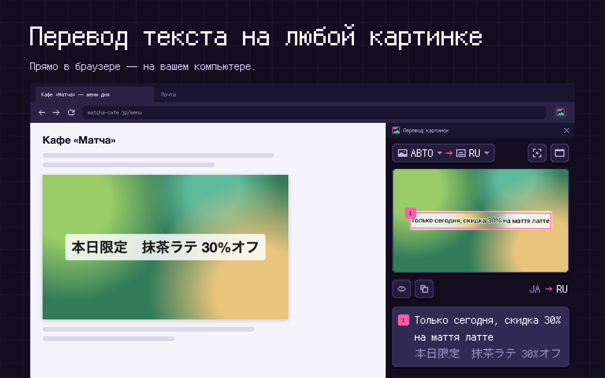
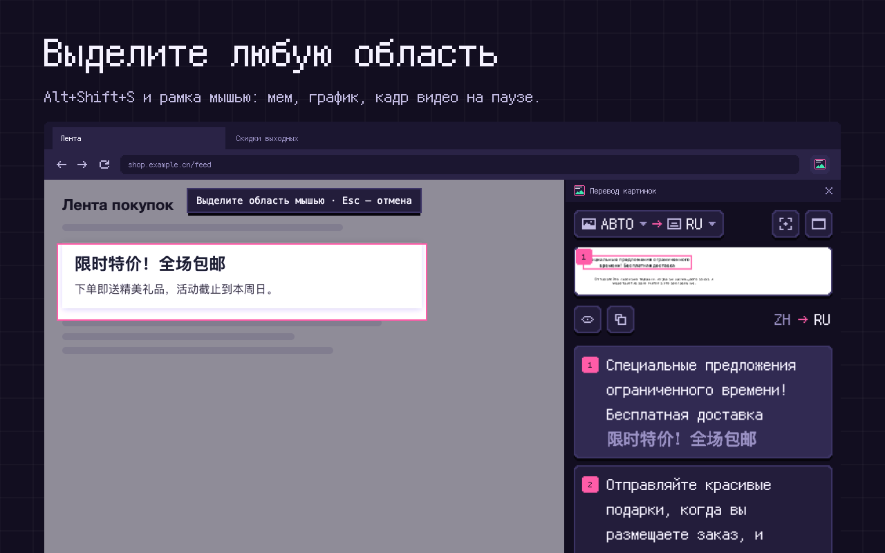
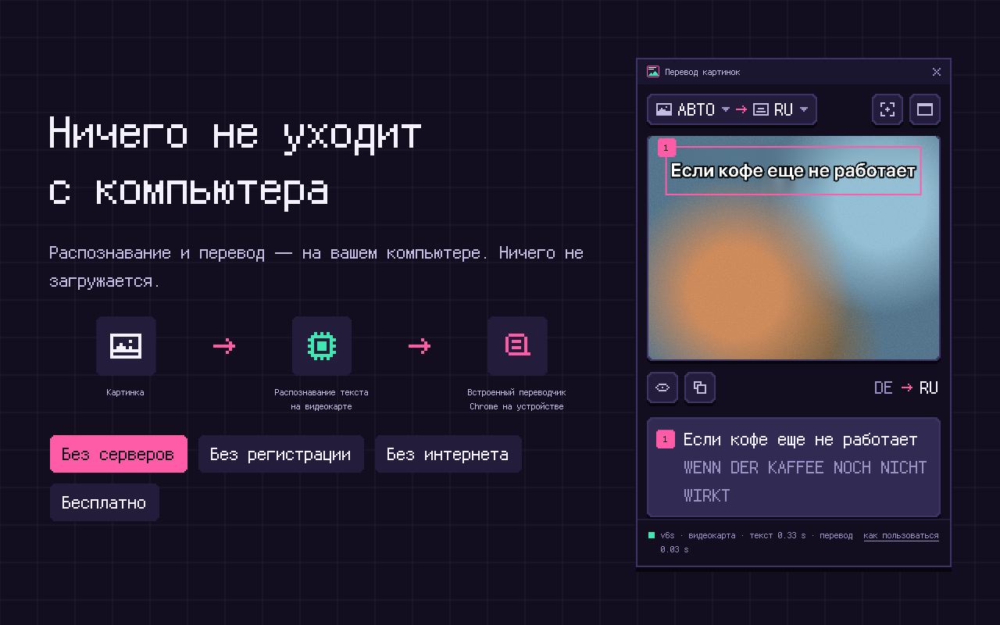

Перевод текста на любой картинке в Chrome
Страницы манги, мемы, скриншоты, фото товаров, вывески, графики и сканы документов. Расширение рисует перевод прямо поверх картинки, в боковой панели рядом со страницей. Распознавание и перевод идут на вашем компьютере — ничего не загружается.
- Бесплатно
- Без регистрации
- Без API-ключа
- Без загрузки
- Без интернета
Скоро в Chrome Web StoreКак пользоваться

Кому подойдёт
Манга и вебтуны
Вертикальный японский текст в «облачках», корейские вебтуны, китайская маньхуа — читаете на своём языке, страница за страницей.
Покупки
Китайские, японские и корейские фото товаров, таблицы размеров и этикетки на AliExpress, Taobao, 1688, Pinduoduo и Amazon Japan.
Мемы и скриншоты
Посты-картинки в Telegram, VK, Reddit, X и Pinterest, скриншоты чатов, приложений и игр.
Путешествия
Фото вывесок, меню, расписаний и объявлений — снятые наспех и под углом.
Учёба и работа
Графики, слайды, инфографика и сканы документов на незнакомом языке.
Приватно по устройству
Ни сервера, ни аккаунта, ни загрузки. Работает без интернета, когда у Chrome есть словари.
Расширение не привязано к одному сайту: если картинка на экране, её можно перевести.
Как пользоваться
Выделить область
Alt+Shift+S (⌥⇧S на Mac) и рамка мышью вокруг любой части страницы: «облачка» с репликой, графика, кадра остановленного видео.
Снимок вкладки
Alt+Shift+A переводит всё, что видно на экране.
Правый клик по картинке
«Перевести картинку»: картинка берётся в полном разрешении, даже если страница показывает её уменьшенной.
Вставить или перетащить
Скриншот из буфера — Ctrl+V (⌘V), или файл картинки прямо в панель.

Панель показывает картинку с переводом поверх оригинального текста — с теми же цветами, под тем же углом и в той же вёрстке. Зажмите картинку — увидите оригинал. Под ней — каждый блок текста с переводом и оригиналом: наведите на блок, и он подсветится на картинке; весь перевод копируется одной кнопкой.
Что умеет хорошо
- Понимает вертикальный японский и китайский текст, повёрнутые и наклонённые вывески, страницы в несколько колонок.
- Перед переводом склеивает строки абзаца, чтобы предложения переводились целиком, а не по строчке.
- Сам определяет язык картинки — или его можно выбрать.
- Картинки по правому клику берёт в полном разрешении; справляется и с очень большими.
- Работает без интернета, когда у Chrome есть словари нужных языков.
Измерено, а не обещано
Каждую версию мы проверяем на 648 тестовых картинках на 27 языках, собранных из теста машинного перевода FLORES-200, и на 70 настоящих сканах анкет из набора XFUND. На MacBook Air M3 в Chrome 155.0.8059.82:
Чем отличается от облачных переводчиков картинок
| «Перевод картинок» | Облачные переводчики | |
|---|---|---|
| Куда уходит картинка | Остаётся на компьютере | Загружается на их серверы |
| Аккаунт, API-ключ | Не нужны | Часто нужны |
| Цена и лимиты | Бесплатно, без лимитов | Бесплатно с дневным лимитом или платно |
| Без интернета | Работает | Нужна сеть |
| Рукописный текст | Частично | Обычно лучше |
| Иврит, бенгальский, каннада | Пока не читает | Обычно читают |
Языки
Читает текст на 36 языках: английском, русском, украинском, болгарском, немецком, французском, испанском, итальянском, португальском, нидерландском, польском, чешском, словацком, словенском, хорватском, венгерском, румынском, литовском, датском, шведском, норвежском, финском, турецком, индонезийском, вьетнамском, греческом, китайском (упрощённом и традиционном), японском, корейском, арабском, хинди, маратхи, тайском, тамильском и телугу.
Переводит на 39 языков: на все перечисленные, а также на иврит, бенгальский и каннада.
Как это устроено
- Распознавание текста: модели PaddleOCR (PP-OCRv6 и PP-OCRv5) лежат внутри расширения и работают через ONNX Runtime на вашей видеокарте по WebGPU, а без неё — на процессоре.
- Перевод и определение языка: встроенные в Chrome переводчик и определитель языка, которые работают прямо на устройстве (Chrome 138 и новее).
- Ничего не уходит с компьютера: ни серверов, ни аналитики, ни рекламы. Расширение скачивает только выбранную вами картинку — с того же адреса, откуда её уже загружает страница; словари скачивает сам Chrome.

Ограничения
- Текст на иврите, бенгальском и каннада пока не распознаётся (перевод на эти языки работает).
- Тоны во вьетнамском распознаются не всегда; в сложных письменностях — арабской, тайской, телугу — иногда теряется буква.
- Рукописный текст распознаётся лишь частично.
- Chrome не разрешает снимать свои страницы (chrome://), магазин расширений и видео с защитой DRM.
Системные требования
- Chrome 138 или новее на компьютере с Windows, macOS или Linux.
- Желательна видеокарта с WebGPU (есть у большинства ноутбуков последних лет); без неё распознавание идёт на процессоре.
- Около 120 МБ на само расширение и около 80 МБ на каждый язык перевода.
С чего начать
При первом запуске короткое знакомство переведёт пример — табличку — и покажет, откуда брать картинки. Там же можно заранее скачать словари Chrome, чтобы потом перевод начинался сразу.
Частые вопросы
Как перевести текст на картинке в Chrome?
Нажмите на картинку правой кнопкой и выберите «Перевести картинку» или нажмите Alt+Shift+S (⌥⇧S на Mac) и выделите часть страницы с текстом. Перевод появится поверх картинки в боковой панели.
Есть ли переводчик картинок, который работает без интернета и никуда не загружает фото?
Да — этот. Распознавание и перевод идут на вашем компьютере; когда Chrome скачал словари, всё работает без интернета.
Можно ли переводить мангу и вебтуны?
Да. Расширение читает вертикальный японский текст в «облачках» в правильном порядке, а также корейские и китайские комиксы. Выделите кадр или всю страницу.
Как перевести китайский текст на фото товара с AliExpress или Taobao?
Нажмите на фото товара правой кнопкой и выберите «Перевести картинку». Фото берётся в полном разрешении, поэтому мелкий текст на этикетках и в таблицах размеров читается.
Можно ли перевести скриншот?
Да. Скопируйте его и нажмите Ctrl+V (⌘V на Mac) в панели или перетащите файл картинки в неё.
Это бесплатно? Есть ли лимиты?
Да, бесплатно, без лимитов, без регистрации и без API-ключа. Всё работает на вашем компьютере — считать нечего.
Почему Chrome просит скачать словарь?
Переводит встроенный переводчик Chrome. Когда пара языков нужна впервые, Chrome скачивает её словарь и хранит у себя — дальше эта пара работает без интернета. Скачивать Chrome разрешает только по нажатию, поэтому в панели для этого есть кнопка.
Почему расширение весит около 120 МБ?
Это модели распознавания текста: они лежат внутри расширения, чтобы ничего не нужно было отправлять на сервер.
Бесплатно · Без регистрации · Chrome 138+ на Windows, macOS, Linux